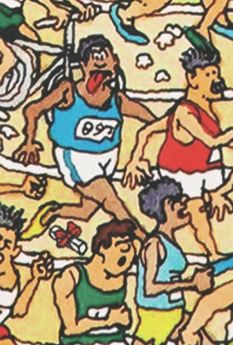
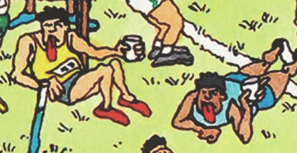

Where's Waldo: Scene 07 - Sports Stadium
## TODO
- Google shows intermediate: half-black/fat/gun/jav before violence/shorten
- 1997 move kid by wizard
- center ump white to black
1997 Special Edition
Political Correctness
The infamous streaker was given a speedo. The women are still recoiling, and the police are still chasing him,
which makes less sense after the edit:
2012 Deluxe Edition
Political Correctness
The half-black and half-white man was removed. The characters marveling over him were flipped, since he's no
longer an interesting subject:
This umpire's starter pistols were redrawn to look less like real guns:
This umpire's starter pistol was removed entirely. The squirt gun was kept, but the races of the kids were
flipped, so it's now being shot by the white kid:
Fat kids were slimmed down:
This scene was altered to make it more clear that the javelins are going through the umpire's clothes:
Political Correctness
Violence against women was removed. This man is no longer punching the woman:
In this case, the woman being assaulted was changed to a man:
This guy's arms were shortened:
2017 30th Anniversary Edition
Political Correctness
Nearly every black character had their face altered in this edition:




References to the red cross were removed: